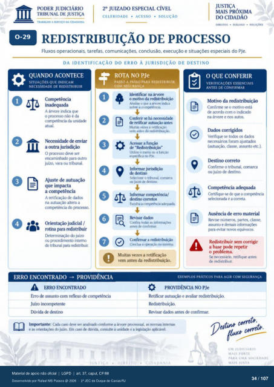

Transcrição automática em português, ainda não revisada. Confira grafia, prazos e termos jurídicos na imagem e no PDF antes de utilizar.
TRAB.At»o A SERVIÇO DA CIDADANIA
CELERIDADE • ACESSO • SOLUÇÃO
• DIÁLOGO •
REDISTRIBUIÇÃO DE PROCESSO
Fluxos operacionais, tarefas, comunicações. conclusão, execução e situações especiais do PJe.
DA IDENTIFICAÇÃO DO ERRO À JURISDIÇÃO DE DESTINO
QUANDO ACONTECE
SITUAÇÔES QUE INDICAM
NECESSIDADE DE REDISTRIBUIR
A árvore indica que o prcxesso não é da
da unidack a outra
O deve ser encaminhado para outro
juízo, vara ou tritNnal. Ajuste de autuação
que impacta a competência
A de na altera a
do prcx:esso. Orientação judicial /
rotina para redistribuir Determtnaçào do juízo
prcr«limento interno tribunal róstmlir.
ERRO ENCONTRADO PROVIDÊNCIA
ERRO ENCONTRADO
Exto de assunto reflexo de compténcia Juízo incoml*tente
Dúvida de destino
ROTA NO PJe
PASSO A PASSO PARA REDISTRIBUIR
Identificar na árvore o nu*ivo da
Analise o que a árvore indica sobre a cornFténcia
Conferir se há necessidade ck rvtificar autuação antes
Muitas vezes a reuticaçáo antes da redastnunçào.
"Redistribuição" Utilize o menu a funçào
esvEifica PJe. Informar jurixl_içáo
destino o tritxmal, cunarca
jutzo Informar cornrrténcia/
ck•stino corretos Exoiha a
C.mfira tcxias as antes confirrnar.
Cmclua a ssterna. Muitas vezes a retificação
vem antes da redistribuição.
O QUE CONFERIR
VERIFICAÇÕES ESSENCIAIS
ANTES DE CONFIRMAR
Motivo da redistritR1içáo Confirme se o motivo está
de acvdo com o indicado na árvore e nc:xS autos.
se tcxios os ne«ssários foram ajustados
(autuaçào, classe, assunto etc.). Destinocorreto
Confirme o tribunal. ou juízo destino.
Competência adequada Certifique-se de a ctxn;ptérria
selecionada é a correta de erro material
Revise números, assunto e
para evitar novos equivcxcs. Redistribuir sem corrigir
a base IX)de re•Ftir o problema.
necessário. retifique antes de r«iistribuir.
EXEMPLOS PRÁTICOS PARA AGIR COM SEGURANÇA
PROVIDÊNCIA NO PJe
Retificar autuação e avaliar redistribuição. Redistribuição.
Revisar antes de confirmar. Imrxrtante: C¿xia cag.) deve ser analisado ctmforme a ár•.ore prcx•essual. as normas internas
e as orientaç¿rs do juízo. Em caw dúvida, consulte a unidade e a legislação cerra
UM JUDICIARIO
MAIS FORTE
PARA SOCIEDADE
Ver também o infográfico original (página 34)
